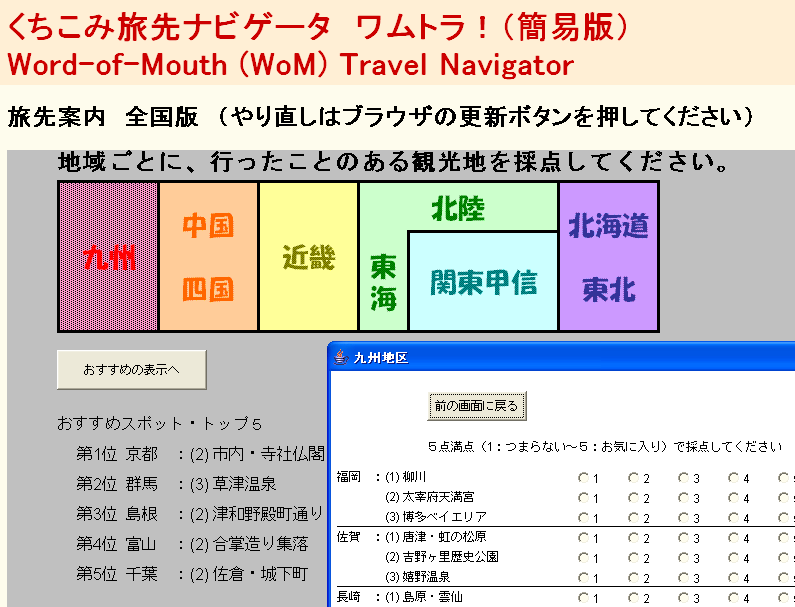
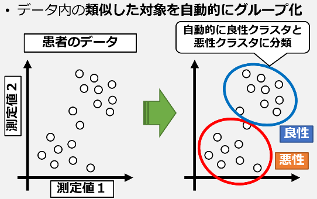
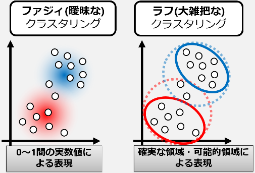
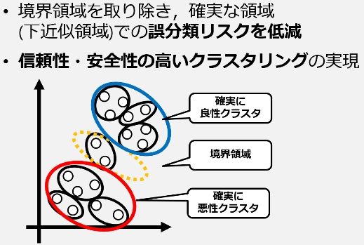
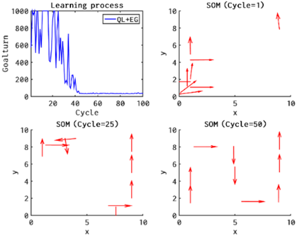

人と情報のソフトなインターフェース
人間情報システム研究室では，ファジィ理論と多変量解析法との融合手法による，アンケートデータやインターネットコンテンツなどの大規模データベースからの知識発見，人間のあいまいな価値判断を含む感性情報の処理を実現するデータ解析法，認知モデルや感性モデルに基づいたエージェントシミュレーションや学習アルゴリズム，情報メディアの開発などの研究を行っています．
News
卒業生の西田泰士氏（Axelidea株式会社 代表取締役）が NEDO GENIAC-PRIZE 地域賞を受賞
当研究室OBの西田泰士博士（博士(工学)）が代表を務めるAxelidea株式会社が，経済産業省とNEDOによる生成AI分野のプログラム GENIAC-PRIZE において特別賞「地域賞」を受賞しました（栗山縫製株式会社との共同受賞）．
受賞テーマ「KATA-LYST AI」は，熟練工の暗黙知をデジタル資産化するAIエージェントの開発で，超小型触覚センサーによる多次元データ取得と国産基盤モデルの動画解析を融合し，職人技を物理法則レベルで形式知化する技能伝承プラットフォームです．
さらに，特許文献に凝縮された問題解決パターンを学習した日本語特化LLM「AXELIDEA-QUON-14B-Japanese-v01」を公開．JA Leaderboard（日本語総合評価7タスク平均）において，非思考型14Bクラスで首位を獲得しています（プレスリリース）．
情報を探し出そう！ ―くちこみ旅先ナビゲータ―
ユーザ間の嗜好の類似性に基づいて未評価項目の評価値を推定することでユーザに特化したお勧めアイテムを探索する協調フィルタリングを，旅行先お薦め問題に応用したシステムです．「自分と好みが似ている人がお気に入りと言っているものを教えてもらう」という"くちこみ"（英語では"Word of Mouth"）をコンピュータ上で再現したシステムです．多くのユーザが様々なコンテンツを自らの嗜好に基づいて評価した値の行列から，そのデータ行列中の未評価値，すなわち欠測値を他の観測値から推定するための理論や技術について研究しています．

「あいまいさ」に着目したデータマイニング
境界をぼかすファジィ理論や，情報を大雑把にとらえるラフ集合理論などを基礎とした柔らかい情報処理であるソフトコンピューティングの観点から，人間が持つあいまいさを反映したデータマイニング，知識発見に関する研究を行っています．ビッグデータが身近になった昨今では膨大なデータを自動的に分類するクラスタリング技術の必要性が高まっています．分類のあいまいさ，不確実性を考慮することで，より柔軟で信頼性・安全性の高いクラスタリングを実現することができます．



人間の思考方法を応用した学習アルゴリズム
近年の学習アルゴリズムは，人が持つ学習の枠組みを情報学的に洗練することで発展してきました．さまざまな学習アルゴリズムに対して認知的な視点からアレンジを加えていくことで，効率的な学習ができるようになります．図は学習プロセスを，神経細胞を模したものが大雑把に捉えていく様子を矢印で示したものです．S字の迷路を学習していく様子がわかります．このようなあいまいさを逆にうまく利用することでより効率的な学習が可能となります．

大学院生の就職先
当研究室では大半の学生が大学院博士前期課程（２年間）に進学しています．
| 2025年度 日立製作所, 日本総合研究所(2), アクセンチュア, SMBC日興証券, 東洋エンジニアリング, アビームコンサルティング |
| 2024年度 日本電気，パナソニック，パナソニック コネクト，MonotaRO，奈良県庁 |
| 2023年度 ディー・エヌ・エー，シャープ，パナソニック コネクト，日鉄ソリューションズ，NTTデータ関西，朝日ネット |
| 2022年度 ソフトバンク，ヤフー，日本電気，KDDI，SMBC日興証券，オプテージ，レンゴー，MonotaRO |
| 2021年度 パナソニック，ダイキン工業，ヤフー，サイバーエージェント(2)，京セラドキュメントソリューションズ |
| 2020年度 NTT西日本(2)，パナソニック，シャープ(2)，イーソル |
| 2019年度 ヤフー，NTT西日本(2)，パナソニック(2)，ダイキン工業 |
| 2018年度 トヨタ自動車，ダイキン工業，住友電気工業(2)，シャープ |
| 2017年度 三菱電機，本田技研工業，ダイキン工業，シンプレクス |
| 2016年度 三菱電機，長谷川鉄工 |
| 2015年度 日立製作所(2)，NTT西日本，日本電気，野村総合研究所 |
| 2014年度 トヨタ自動車(2)，大和総研，日立製作所，日興システムソリューションズ，三菱自動車工業，住友電気工業 |
| 2013年度 日立製作所(2)，楽天，阪急電鉄，ダイキン工業，野村総合研究所，沖アドバンストコミュニケーションズ |
| 2012年度 関西電力，日立製作所，三菱東京UFJ，ダイキン工業，データスタジアム |
| 2011年度 朝日新聞社，NTTコミュニケーションズ |
| 2010年度 パナソニック，シャープ |
| 2009年度 関西電力，シャープ(2)，キーエンス |
| 2008年度 松下電器(2)，松下電工，シャープ，日本電気，デンソー |
| 2007年度 デンソー，シャープ，三菱電機 |
| 2006年度 シャープ，関西電力，大和証券SMBC，オリエンタルランド |
| 2005年度 松下電器，日本電気，東レ |
| 2004年度 松下電器，西日本電信電話，住友信託銀行，日本総研，日本電気，三菱商事 |
| 2003年度 シャープ，住友電気工業，三井住友海上火災，日本IBM，KDDI |
| 2002年度 日本生命，富士通，三菱電機，松下電器，日本総研，日本電気 |